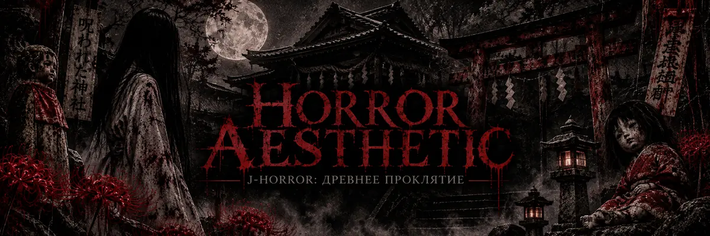
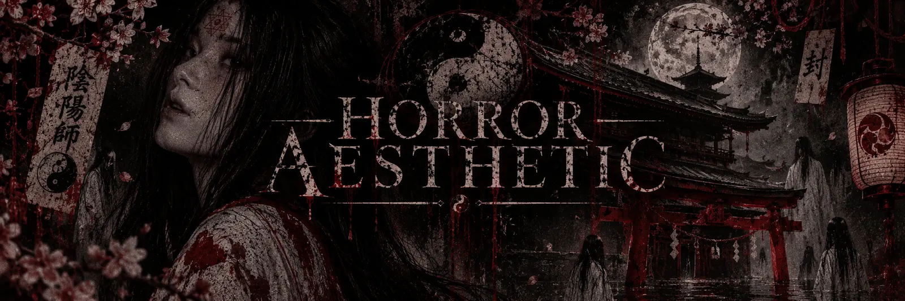
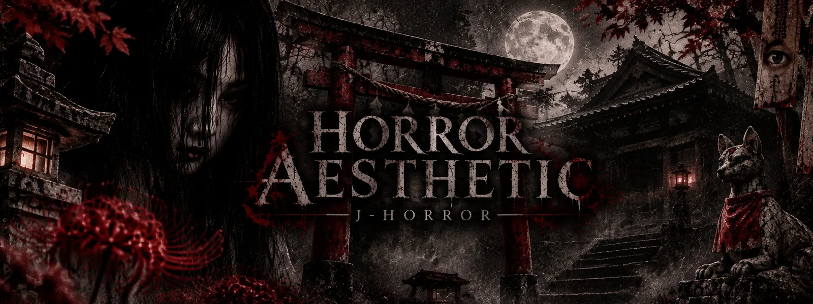

Myth / Folklore / The uncanny
Folklore & Hauntings
Страхи, которые старше кинематографа: призраки, демоны, проклятые места, ритуалы и городские легенды разных культур.

Japanese folkloreYōkai &
Yōkai &
Yūrei
Существа и духи японской традиции

OccultRituals &
Rituals &
witchcraft
Обряды и запретное знание

HauntingsGhost
Ghost
stories
Истории о возвращающихся
Folklore index